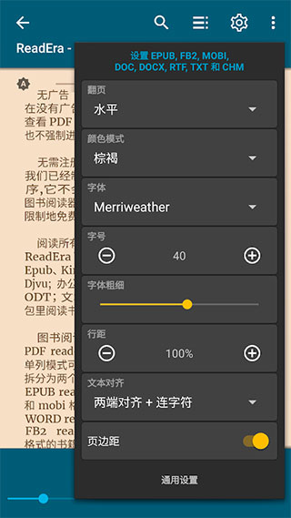
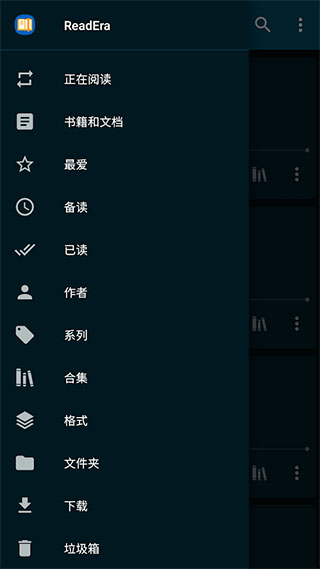

ReadEra 是什么？一个读者的快问快答
ReadEra 以"真无广告 + 多格式全覆盖 + 一次性买断"三条硬指标在 Android 阅读器里站稳脚跟。本文整理读者常问的八个问题，从它是什么、怎么装、PDF 为什么比别人好用，到付费值不值、SD 卡扫不到书怎么办。
整理一篇关于 ReadEra 的快问快答——这是我最近换手机后重新装阅读器时被问最多的那个名字。
它到底是什么？凭什么 Google Play 能拿 4.9 分？
ReadEra 是一款起源于俄语市场的 Android（现在也上了 iOS）电子书阅读器——它的官网上能看到完整的功能清单。开发商是 READERA LLC。它在 Google Play 上 4.9 分（同类竞品大多 4.5 左右）靠的是三件事：真无广告、多格式全覆盖、Premium 一次性买断。免费版启动页没有广告、翻书没有插屏、书页没有横幅、书签列表干净——在一个"免费即广告"的赛道里，这条底线直接把它和 Moon+ Reader（免费版有插屏 + 横幅）拉开了差距。
哪些人该装？哪些人装了也用不上？
该装的：读 PDF 教科书/论文、学术 Djvu、偶尔遇到 DOC/DOCX 格式的书、在意阅读体验不想被打扰、或者需要跨设备云同步的人。ReadEra 是唯一能原生处理 Djvu 和 DOC/DOCX 的主流 Android 阅读器——如果你手里有一堆扫描版的学术 Djvu，其他阅读器根本打不开。
装了也用不上的：只读 EPUB/MOBI 主流格式、特别在意翻页动画和主题皮肤的人。Moon+ Reader 有 2000+ 社区主题皮肤和 50+ 种翻页动画（仿真翻页、滚动、滑动……），而 ReadEra 只有直接切换，主题皮肤也只有 5 种。
怎么装？免费版和 Premium 有什么区别？
直接去应用商店搜"ReadEra"，或者下载官方安装包——免费版已经是真无广告的，能用一辈子。Premium 版是一次性买断（不是订阅），解锁的核心功能有：Google Drive 云同步（书籍 + 进度 + 书签 + 引文 + 注释）、后台 TTS（0.1x-4x + 锁屏 + 跳页眉页脚）、跨书引文/注释/书签统一收藏区、PDF 缩放锁定、自定义字体上传。如果你只读几本书、不需要云同步，免费版完全够用。
核心怎么用？PDF 为什么比其他阅读器好用？
打开应用就是书架界面，自动扫描内部存储和 SD 卡上的书。点书进去就是阅读界面——点击页面中央弹出设置面板，可以调翻页方向（水平/垂直）、颜色模式（五种：白天/夜间/护眼/Sepia/深褐）、字号、字体、字体粗细、行距、文本对齐 + 连字符开关、页边距。
PDF 的优势在于 ReadEra 做了宽度适配 + 边距裁剪 + Premium 缩放锁定——其他阅读器可能只做了宽度适配，而 ReadEra 能让一页 PDF 在手机屏幕上占满宽度，再把白边裁掉，比原始 PDF 舒服太多。Djvu 和 DOC/DOCX 也是它独有的原生处理能力。

SD 卡扫不到书怎么办？
Android 11+ 之后分区存储让 SD 卡访问比以前复杂很多，按三层门槛排查：
第一层：硬件识别。 设置 → 存储 → 外部存储/SD 卡，系统能看到容量吗？拔插重启试试。系统层面看不到 → 物理问题或卡格式不对（Android 支持 FAT32、exFAT、NTFS；EXT4 不识别）。
第二层：文件访问权限。 系统设置 → 应用 → ReadEra → 权限 → 找"文件和媒体"或"所有文件访问" → 必须开启。权限没开 ReadEra 完全看不到 SD 卡上的任何文件——这是 2021 年后 Android 最常见的坑。
第三层：SD 卡根目录授权（写入需要）。 能读 ≠ 能写。书架侧边栏 → 文件夹 → 尝试浏览 SD 卡根目录，系统可能弹出一个特殊授权弹窗让你选根目录。如果没弹但之后写操作失败，八成是这个没授权成功，重新选一次根目录试试。
字体排版有什么讲究？
ReadEra 不内置任何字体，调用设备上已安装的系统字体——关于字体渲染的更多细节可以翻readera文档。中文字体系统默认就能显示，西里尔字母（俄文/乌克兰文）是它起源市场所以处理特别到位。Premium 版可以上传自己的 TTF/OTF 字体文件，上传后只在 ReadEra 内生效，不替换系统字体。
字号、行距、页边距三者联动——字号太大每行字太少反而疲劳，行距 120-130% 是舒适起点，手机上页边距建议始终开启（手指操作容易蹭到边缘），平板上可以关掉。文本对齐方面中文推荐左对齐（两端对齐会拉伸空格），连字符开关中文关掉、英文建议开启。

文件打不开是什么问题？
ReadEra 支持 EPUB、MOBI、AZW3、FB2、PDF、Djvu、DOC、DOCX、RTF、ODT、TXT、CBR、CBZ、CHM、ZIP、RAR。不支持的常见格式：.azw（不带 3 的 Kindle 第一代加密格式）、.7z（7-Zip 压缩包）、DRM 受保护的 EPUB。
能扫描到但打不开的常见原因：文件本身损坏（换个阅读器试试）、扩展名被恶意修改（.exe 改名为 .epub 伪装成电子书）、加密 ZIP/RAR（ReadEra 不支持解压加密压缩包，手动解压再扫）、DRM 受保护的 EPUB（需要用 Adobe Digital Editions 去 DRM）、EPUB 内部结构损坏（用 epubcheck 检查）。
和 Moon+ Reader 比选哪个？
选 ReadEra：最在意干净无广告、读 PDF/Djvu/DOC、多设备同步、学外文书需要词典区、一次性买断不想花第二次钱。
选 Moon+ Reader：非常在意翻页动画和视觉定制、只读 EPUB/MOBI/PDF 主流格式、不需要云端同步。Moon+ 有 50+ 种翻页模式和 2000+ 社区主题皮肤，ReadEra 比不了。
两者兼得：装两个。免费版 ReadEra 读 PDF/Djvu/DOC 享受无广告，免费版 Moon+ 读 EPUB 享受翻页动画——免费版两者都够用。
最后一句：如果你手里有 PDF 教科书或 Djvu 扫描件、又不想被广告打断阅读，直接装 ReadEra 免费版；纯 EPUB 党、追求翻页动画的视觉动物，Moon+ Reader 更对路。两套资料（格式清单对比、字体排版细节、SD 卡排查流程）在三个仓库都能拿到——GitHub的维护最及时，Gitee国内访问更快，GitCode有一份镜像备份，按需选即可。